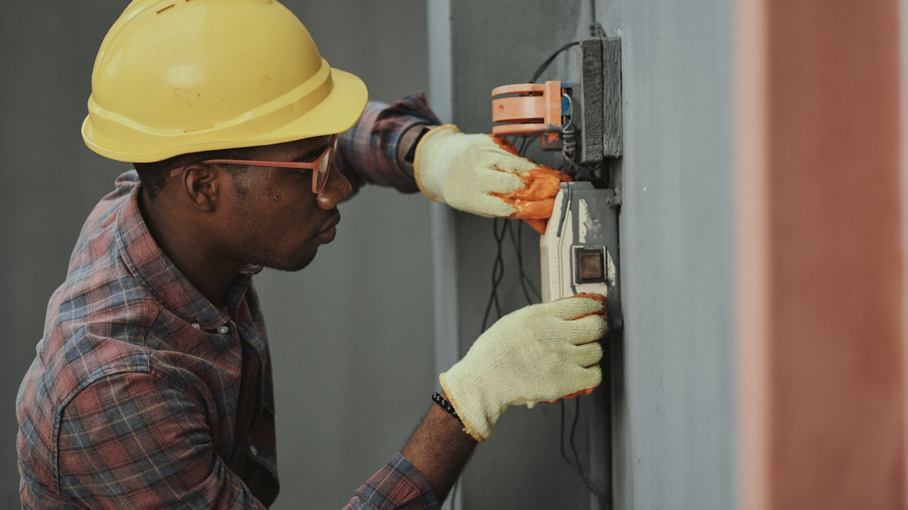

Chaque canicule en France relance la meme question : comment rafraichir le logement sans exploser la facture d'electricite ? Les panneaux solaires photovoltaiques ne remplacent pas l'isolation, mais l'autoconsommation alimente ventilateurs, clim (si installee) et pompe a chaleur en plein soleil — precisement quand le reseau est tendu. Reste a combiner aides publiques, aides des collectivites et un pret adapte pour financer l'installation.


1. Pourquoi le solaire parle en periode de canicule
En ete, la production PV est maximale en journée — quand la clim et la ventilation tournent. L'autoconsommation (consommer sur place ce que vous produisez) reduit la part achetee au fournisseur. Le surplus peut etre revendu (tarif reglemente de vente du surplus) selon contrat et puissance installee. Ce n'est pas une clim gratuite, mais un levier de pouvoir d'achat energie complementaire a l'isolation et aux stores.
2. Aides de l'Etat (primes, fiscalite, TVA)
Les dispositifs evoluent ; a date, les foyers peuvent cumuler selon profil : prime a l'autoconsommation photovoltaique (forfait par kWc installe, conditions de raccordement et d'installateur RGE), vente du surplus d'electricite, parfois TVA reduite sur l'installation en habitation principale sous conditions. Cote impots : revenus de vente de surplus souvent exoneres dans certaines limites pour les particuliers. Demandez un chiffrage avec mention explicite des aides deduites — etude financement travaux.
3. Collectivites, region, CEE et programmes locaux
Au-dela de l'Etat, certaines metropoles, departements ou EPCI proposent des subventions « energie solaire », des operations groupees ou des conseils via l'ADIL / maisons de l'habitat. Les Certificats d'economies d'energie (CEE) peuvent financer une part de travaux de performance energetique (souvent couple isolation + equipements). Consultez le site de votre mairie ou region : les montants varient et les budgets s'epuisent vite en debut d'annee.
4. Quel pret pour financer les panneaux solaires ?

Plusieurs options selon votre situation : eco-PTZ (pret a taux zero) si le projet entre dans un bouquet de travaux d'economie d'energie eligibles et que vous respectez les plafonds de ressources ; credit travaux / credit consommation pour financer le reste a charge ; renegociation ou rachat de credit si vous voulez lisser la mensualite sans toucher a l'epargne de precaution. Si vous avez deja un pret immobilier, verifiez l'impact sur votre taux d'endettement avant d'emprunter. Demander un devis credit conso · credit immobilier / travaux.
5. Assurance habitation : declarer l'installation

Des panneaux solaires modifies la toiture et la valeur du bien. Prevenez votre assureur : garantie dommages (tempete, grele), responsabilite vis-a-vis du voisinage (chute d'objet, surchauffe), parfois extension « equipements exterieurs ». En cas de sinistre lie a la canicule (orage, grele), une installation non declaree peut compliquer l'indemnisation. Devis assurance habitation.
6. Checklist avant de signer un devis solaire
Installateur RGE, etude de consommation, part d'autoconsommation estimee, devis avec primes deduites, mode de financement, delai de raccordement Enedis, mise a jour assurance habitation. En periode de canicule, les delais d'installation peuvent s'allonger — anticipez plutot qu'en alerte rouge.
Ordre de priorite energie en canicule
- Isoler combles et murs (confort + facture)
- Stores / occultation (effet immediat chaleur)
- Photovoltaique autoconsommation (production journee)
- Clim ou PAC si budget et copropriete le permettent
Simuler financement + aides avant signature
Un installateur serieux detaille le reste a charge apres primes. Un courtier compare ensuite eco-PTZ, credit conso ou reprise de pret existant pour que la mensualite reste compatible avec votre assurance emprunteur et votre reste a vivre. Etude financement · Devis credit conso.
Pourquoi ce sujet compte pour votre panneaux solaires canicule
Que vous soyez en recherche d'un devis panneaux solaires canicule, en renouvellement ou en reaction a l'actualite, l'objectif reste le meme : comprendre vos garanties, comparer a postes equivalents et eviter les exclusions cachees. Les termes suivants reviennent souvent dans les contrats : panneaux solaires canicule, photovoltaique autoconsommation, prime autoconsommation, eco-PTZ panneaux solaires, credit conso travaux energie, aides collectivites solaire, CEE photovoltaique, financer panneaux solaires, canicule France 2026, assurance habitation photovoltaique, pret travaux energie.
Les garanties a verifier avant de signer
- Plafonds et franchises : ce qui reste a votre charge apres sinistre
- Exclusions : situations non couvertes (usure, negligence, zones a risque…)
- Delais : carence, declaration de sinistre, traitement du dossier
- Options : assistance, protection juridique, extension famille ou materiel
- Prix annuel : hors promotions — refaire un comparatif chaque annee
Comparer sans se fier au seul prix affiche
Un tarif bas peut masquer un plafond bas ou une franchise elevee. Demandez un tableau comparatif avec les memes postes : photovoltaique autoconsommation, prime autoconsommation, eco-PTZ panneaux solaires. C'est la methode utilisee par les courtiers pour aligner Allianz, AXA, April, Generali, Zéphir, Solly Azar et le reste du marche.
Erreurs frequentes a eviter
- Souscrire en ligne sans lire les exclusions ni les plafonds
- Oublier de mettre a jour le contrat apres un demenagement, divorce ou changement d'activite
- Resilier avant d'avoir une attestation de remplacement (risque de rupture de garantie)
- Ne pas declarer un sinistre dans les delais contractuels
- Ignorer la clause de beneficiaire (prevoyance, assurance-vie, deces)
Lexique et mots-cles utiles (panneaux solaires canicule)
- panneaux solaires canicule : terme central de cet article — a retrouver dans votre contrat ou devis
- photovoltaique autoconsommation : a comparer entre assureurs a garanties equivalentes
- prime autoconsommation : a comparer entre assureurs a garanties equivalentes
- eco-PTZ panneaux solaires : a comparer entre assureurs a garanties equivalentes
- credit conso travaux energie : a comparer entre assureurs a garanties equivalentes
- aides collectivites solaire : a comparer entre assureurs a garanties equivalentes
- CEE photovoltaique : a comparer entre assureurs a garanties equivalentes
- financer panneaux solaires : a comparer entre assureurs a garanties equivalentes
- canicule France 2026 : a comparer entre assureurs a garanties equivalentes
- assurance habitation photovoltaique : a comparer entre assureurs a garanties equivalentes
- pret travaux energie : a comparer entre assureurs a garanties equivalentes
Comment obtenir un accompagnement Leads Opportunities
Notre equipe de courtiers ORIAS vous aide a comparer, resilier ou souscrire avec un langage clair. Formulaire en ligne, demande de rappel ou parcours devis selon votre besoin : panneaux solaires canicule, sans engagement.
Consultez aussi notre catalogue complet des assurances (sante, auto, habitation, emprunteur, prevoyance, VTC, animaux) et nos pages SEO par ville pour un devis localise.
Questions frequentes
Comment comparer une offre panneaux solaires canicule en 2026 ?
Listez vos besoins reels (budget, garanties, situation familiale ou pro), puis demandez un comparatif a garanties equivalentes. Un courtier ORIAS explique les exclusions avant de signer.
Le devis est-il gratuit et sans engagement ?
Oui chez Leads Opportunities : devis gratuit, accompagnement humain, aucune obligation de souscription immediate.
Puis-je changer d'assureur en cours d'annee ?
Selon le contrat : loi Hamon, loi Chatel, loi Lemoine (emprunteur) ou echeance annuelle. Verifiez delais de preavis et equivalence de garanties.
Quels documents preparer pour un devis ?
Contrat actuel, dernier avis d'echeance, sinistres des 3 a 5 ans, situation (locataire, emprunteur, salarie, independant).
Courtier ou comparateur en ligne : quelle difference ?
Le comparateur affiche un prix ; le courtier verifie les plafonds, franchises, delais de carence et la compatibilite avec votre profil.
Cet article Canicule et panneaux solaires remplace-t-il un conseil personnalise ?
Non : il informe sur les garanties et mots-cles utiles. Une etude personnalisee reste necessaire avant de resilier ou souscrire.